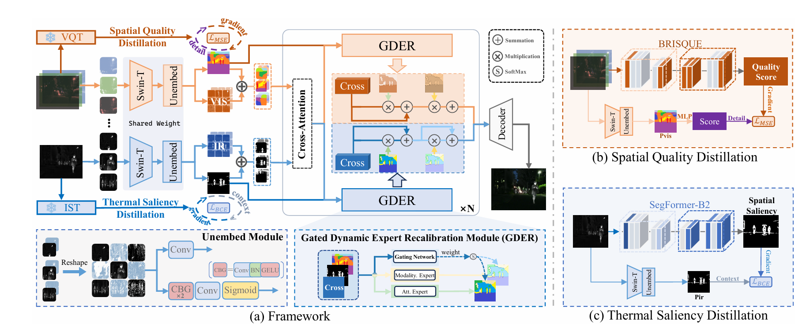
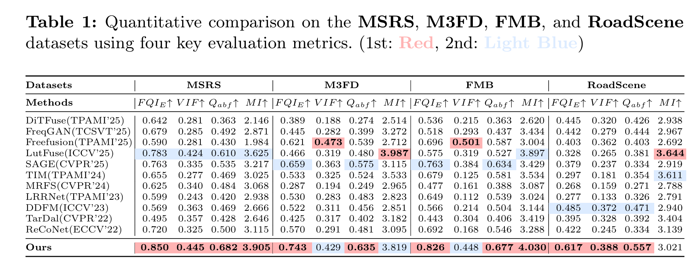
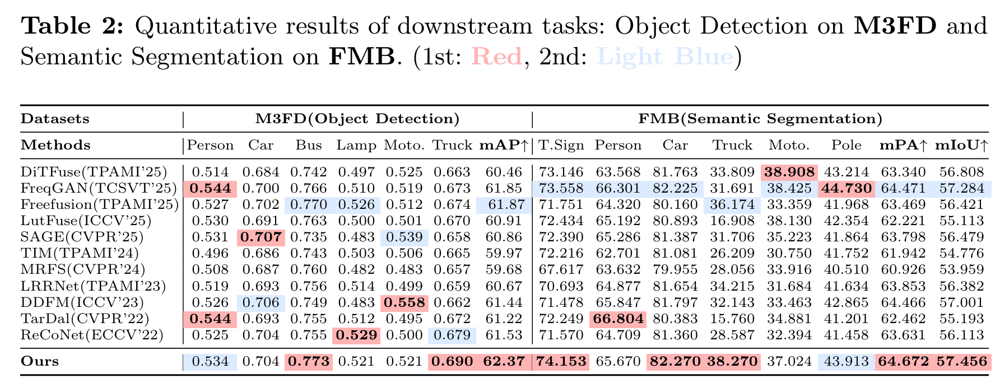
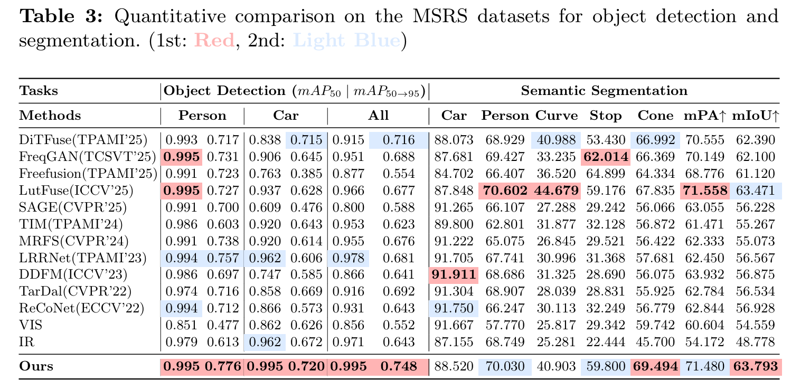

P2Fusion: Prompt-based Progressive Infrared-Visible Image Fusion via Dual-Prior Distillation
Abstract
Infrared-visible image fusion (IVIF) is pivotal for multimodal perception, yet reconciling the inherent information disparity between thermal and textual features remains a fundamental challenge. Existing prior-guided methods often rely on static constraints that induce optimization conflicts or utilize extrinsic semantic priors from large-scale foundation models (e.g., CLIP/DINO), which frequently fail to exploit the intrinsic modality characteristics essential for high-fidelity fusion. To address these issues, we propose P2Fusion, a prior-guided distillation-based framework that reformulates IVIF via dual intrinsic prompts. Instead of imposing hard-coded penalties, we distill image-intrinsic priors, thermal saliency and spatial quality into learnable, dynamic regulators. Specifically, a Teach-to-Fuse mechanism provides dual-granularity progressive guidance, coupled with a Gated Dynamic Expert Recalibration (GDER) module for decoupled feature refinement. This design enables the network to adaptively mediate modal competition through expert specialization. Extensive experiments demonstrate that P2Fusion achieves state-of-the-art performance across five mainstream datasets. Notably, our framework demonstrates consistent performance advantages in fusion quality, achieving state-of-the-art results in 14 out of 20 key evaluation metrics across 5 benchmarks. Furthermore, it effectively contributes to the robustness of downstream perception, such as +3.2% mAP on MSRS, +0.5% mAP on M3FD and +0.9% mAP on DroneVehicle for object detection.
Overview

Main Results



Visualization